УМЕЛЫЕ РУКИ
Даешь тренд
Летом мне довелось слушать в офисе Ostengruppe лекцию Протея Темена о Трендах в дизайне. Кроме родившегося в ходе обсуждения слова "тренденция" я, признаюсь, запомнил мало, тем более что собственно описываемые тренденции были мне в массе не близки. Но я потом спросил у Протея, как человека не в пример более осведомленного в делах сегодняшнего дня, какие движения он наблюдает в иллюстрации.
Вот, что написал мне Протей: «фешн-х*ешн черно-белые штуки, линии, мрамор, немного такой странной неоготики, может небольшие оп-арт эффекты, машашабаева до сих пор актуалитэ и ядреный колороэкспрессизм немного стритартовый».
Неясно, что делать с этим знанием. Ясно, что существовать в отрыве от того, что происходит, невозможно - в том и веселье, знай барахтайся в общей каше, хватай коллег и кумиров за части тела, по возможности отрывай и пристраивай себе - как в игре Spore.
Но вопрос в том, какой тренд поддерживать - тот, которого много (как принято) или тот, который нравится (как стоило бы)?
И все же есть признаки того, что векторная, и вообще цифровая графика начинает надоедать и публике, и, что важнее, арт-директорам, которые, надо сказать, заметную играют роль в деле формирования трендов.
Мне вот все стал чаще попадаться тренд, вряд ли придуманный Олегом Пащенко, но связанный для меня изначально именно с ним, а недавно вновь открытый Сергеем Первушиным, известным как exabute: фото с рисованными элементами, шикарный способ рассказать о присутствии неведомого.
Сергей Первушин
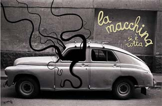
tebe-interesno.livejournal.com
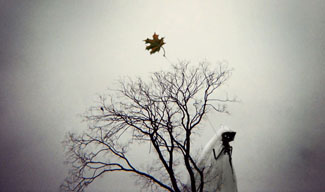
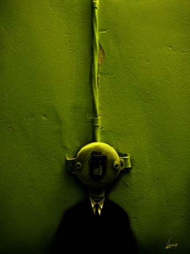
(Не располагаю именами последних авторов, подскажете – впишем)
Это, кстати, похоже на тренд эндемичный. Я, ползая по зарубежным сайтам в поисках подобного, встречал все больше ссылки на того же Первушина.
Сюда же, впрочем, относятся всенародно любимые чешские флешовые квесты:
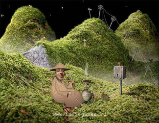
Присутствие в иллюстрации фотографических элементов (вроде бы скорее наоборот, тут фотография занимает большую часть площади - но рисованные элементы уверенно подгребают ее под себя и превращают в иллюстрацию) сообщает ей столько графического сока, столько достоверности, что, в общем, странно, что эта история до сих пор не влилась в нормальную журнальную иллюстрацию, а остается какой-то самодостаточной игрой.
Вообще много кто работает с коллажом –
Sara Fanelli, куда без нее
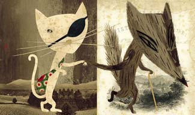
(опять, гляньте, как фон работает, тупо и эффектно)
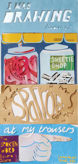
– но стоит чуть выйти за плоскость листа, как начинаются вещи гораздо более интересные.
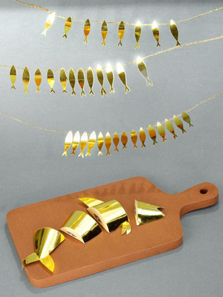
Этого, кстати, я за рубежом не вижу вообще. Мне, как я уже говорил, все это кажется слегка чересчур бизнесово-полированным, но я готов все свое влияние употребить на то, чтобы у дуэта Ляпунова и Эрлих появилась толпа подражателей.
Все вот эти рукодельные технологии, начиная с коллажа и кончая какими-то совсем экзотическими решениями, выигрывают у вакома всухую просто потому, что выглядят (да и являются) в сто раз более живыми и достоверными. И все за две копейки (ну да, ваком бесплатно - но не гонялся бы ты, поп, за дешевизной). Они требуют дополнительных трудозатрат (и как минимум цифорвой камеры)- но при этом, на самом деле, экономят кучу времени. Миллион человеко-часов вылизывания рефлексиков в программе пейнтер заменяет пластилин с хорошо поставленным светом.
Я здесь не рекламирую собственные работы, но эта вроде как не совсем моя - вернее, если бы она осталась моей, нечем было бы хвалиться. Календарь для фестиваля Кинотавр, который я сделал совместно с Шандизайном, для меня просто вопиющий пример того, как рукоделие оживляет иллюстрацию.
(для справки: пластилин был одноцветный, раскрашен в фотошопе)
При этом пластилину вовсе необязательно выглядеть пластилином:
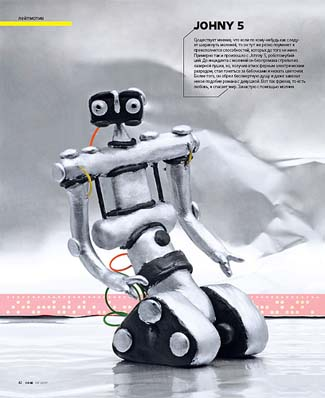
...а вот кому папье-маше:
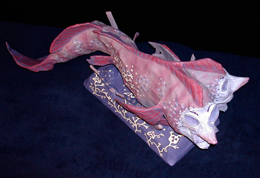
Из экзотических решений: скульптуры из книжек
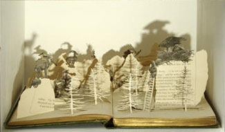
(вот тут – вообще черт знает что из книжек от разных авторов)
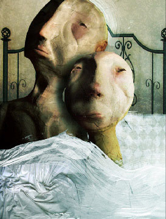
– там, конечно, сложносмешанная техника, но куклы точно используются.
Или вот:
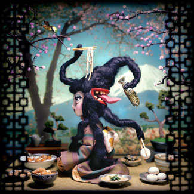
Кстати, рукоделие - прекрасный способ компенсировать недостаток навыков чистого рисования - способ много более эффектный и главное, трендовый, чем навязший в зубах «наивняк» (это, к моей радости, последнее время успешно просекают отдельные студенты Британской школы, посмотрим, что будет дальше).
Отдельный привет Дуплу.нет.ру и всем обитающим в нем художникам – вот бы посмотреть, как это превратится в иллюстрацию, а?
klazki
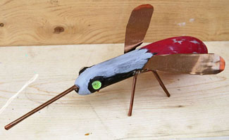
Обычно не вешаю картинки по два раза – но эта, чем больше на нее смотрю, тем больше кажется мне самой крутой иллюстрацией in the history of ever.
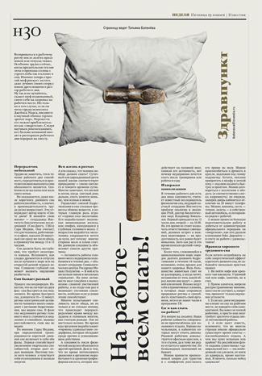
Все это, боюсь, пока что не гребень волны, но опять же, только потому, что большинству лень возиться. В свете последних трендов экономических у нас с вами может появиться много свободного времени - так давайте, что ли, попробуем отлипнуть от вакома и выйти в третье измерение.